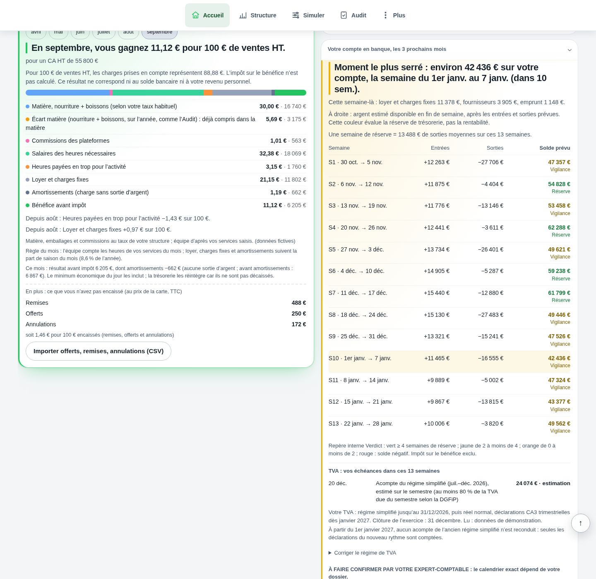

Comprendre le sujet
Rentable, mais à court de trésorerie ?
Le résultat suit les produits et les charges ; la trésorerie suit les paiements.
La réponse complète et ses limites
Le résultat suit les produits et les charges ; la trésorerie suit les paiements. Stocks, délais, TVA, investissements et remboursements peuvent absorber de l’argent malgré un bénéfice. Commencez par dater les encaissements et décaissements. Un solde positif à la fin du mois ne suffit pas si une échéance tombe avant une recette.
Comprendre
La méthode, en clair.
LES POINTS QUI CHANGENT LA LECTURE
La méthode, en clair.
Des repères à appliquer dans votre établissement. Le détail reste accessible, sans perdre le fil.
Retrouver le décalage
Un achat de stock peut être payé avant d’être consommé. Un équipement mobilise des fonds lors du règlement alors que sa charge est répartie différemment dans les comptes. Le remboursement du capital d’un prêt réduit le compte bancaire sans diminuer de la même façon le résultat.
Côté recettes, une vente et son encaissement peuvent tomber à des dates différentes. Rapprochez les relevés de plateforme, acomptes et règlements clients sans confondre versement net et chiffre d’affaires.
Suivre les échéances intermédiaires
Partez du solde disponible, puis placez les flux aux dates attendues. Avec 15 000 € au départ, payer 20 000 € avant toute recette produit un besoin temporaire de 5 000 €. Des encaissements plus tardifs peuvent rendre la fin de mois positive sans effacer ce passage.
Séparez les flux confirmés et les hypothèses. En cas d’échéance non couverte, contactez rapidement votre comptable et les interlocuteurs concernés avec ce calendrier chiffré.
Ce que fait ce simulateur
Il calcule un solde final pédagogique à partir de trois montants. Il ne suit pas un compte bancaire, ne gère pas les échéances et ne constitue pas une fonctionnalité de trésorerie de Verdict. L’application sert à la lecture économique de votre activité.
Calculer
LE LABORATOIRE
Vos hypothèses.
Une lecture immédiate.
Modifiez les données, observez le résultat, puis vérifiez ce que le calcul permet de conclure.
Interpréter
UN SCÉNARIO, JUSQU’AU BOUT
Le calcul, jusqu’au bout
Une fin de mois positive
Le calcul final donne 11 000 €. Le second calcul montre pourquoi les dates restent indispensables.
Exemple fictif · hypothèses modifiables
| Solde de fin de période | 11 000 € |
|---|---|
| Besoin avant les premières recettes | -5 000 € |
Les montants sont arrondis pour la lecture.
Les calculs gardent leur précision.
Les questions qui restent
Verdict est-il un logiciel de trésorerie ?
Non. Le calcul proposé ici est pédagogique. Il ne prouve aucune connexion bancaire ni aucun suivi automatisé des paiements.
Un emprunt améliore-t-il la rentabilité ?
Il apporte des fonds et crée des remboursements. Cet apport n’est pas une vente ni un bénéfice d’exploitation.
Sur quoi repose cette lecture
Les formules et hypothèses sont affichées pour être contrôlées. Les exemples chiffrés sont fictifs et ne constituent pas des statistiques de métier. Les définitions et repères institutionnels utilisés par Verdict sont regroupés dans les sources.
Agir
Votre prochaine action
Placez les échéances de la prochaine période dans l’ordre des dates, puis repérez le solde le plus bas.
DANS L’APPLICATION VERDICT
Trésorerie : entrées, sorties et solde prévu sur treize semaines.

Trésorerie sur treize semaines dans la démonstration fictive Brasserie Collet : projection du solde et hypothèses ; aucune connexion bancaire réelle.
Voir l’écran en grand
Votre compte en banque, les 3 prochains mois
S1 · 30 oct. → 5 nov.
S13 · 22 janv. → 28 janv. : 49 562 €
Les soldes dépendent des hypothèses renseignées ; résultat comptable et argent disponible restent distincts.
LES CHIFFRES NE VIVENT PAS SÉPARÉMENT.
Reliez cette décision
au reste de votre activité.
Ventes, carte, inventaire : découvrez la lecture proposée par Verdict, avec vos données et vos hypothèses.